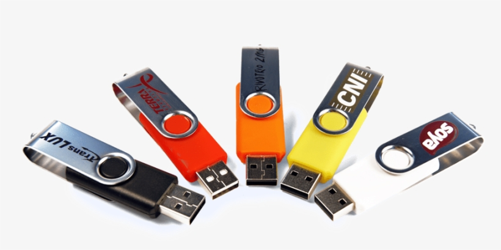
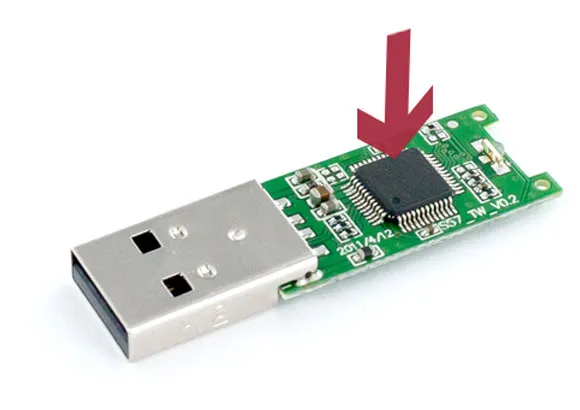
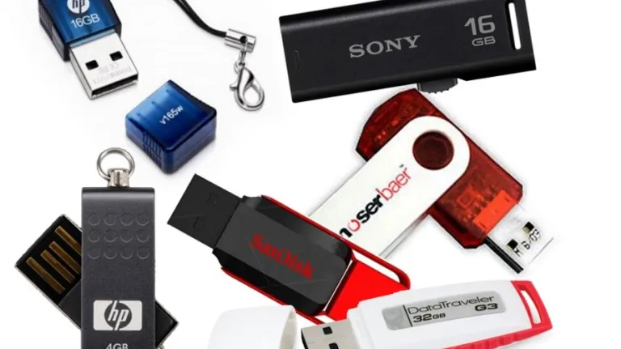
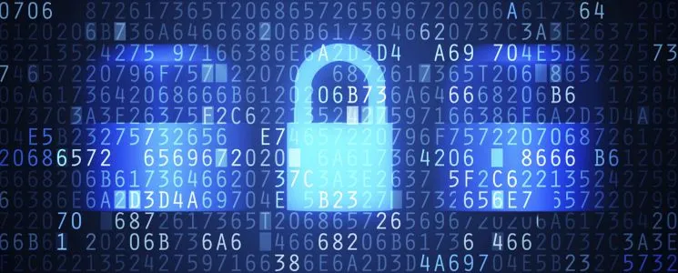

Pen Drive ou Memória USB Flash Drive é um dispositivo de memória constituído por memória flash, com aspecto semelhante a um isqueiro. Surgiu no ano de 2000, com o objetivo de substituir o disquete, resgatar dados de computadores estragados, realizar backup com mais facilidade, abrigar determinados sistemas e aplicativos mais utilizados.
Possui diferentes capacidades de armazenamento que varia entre 64 megabytes e 80 gigabytes. A velocidade com que um pen drive armazena um material também é variável, depende do tipo da entrada disponível no computador. Se este for bem cuidado, pode desempenhar suas funções por até dez anos.
Os pen drives, como parte da evolução tecnológica, podem ter alguns diferenciais que os tornam únicos, existem pen drives com leitores biométricos que somente copia e armazenam dados a partir da leitura de uma parte do corpo do seu proprietário, ou seja, utiliza partes do corpo (impressão digital, por exemplo) como mecanismo de identificação. Este pode gravar senha de sites, lista de favoritos e outros.
Como funciona o pen drive
Apesar do tamanho pequeno, um pen drive tem uma grande capacidade de armazenamento de arquivos. Isso porque o dispositivo possui uma placa de circuito interno, na qual está o componente principal: a memória flash. Essa memória é eletrônica e não magnética, diferente dos antigos disquetes. Ela também permite que as informações sejam gravadas e regravadas, ação que não era possível com as tecnologias de armazenamento anteriores.

As informações são guardadas nos elétrons da placa de memória, de maneira que, quando se perde um elétron, se torna o número 0. Caso contrário, se receber um elétron, se torna o número 1. Formando assim, uma sequência de 1 (um) e 0 (zero). Trata-se uma linguagem binária, mesma tecnologia usada nos computadores para armazenar informações.
Essa memória pode ser programada e lida a partir de um conector USB, uma entrada criada a fim de facilitar, padronizar e tornar mais rápida a comunicação entre o computador e outros dispositivos. Quando o pen drive é conectado a uma entrada USB de computador para gravar dados, os dados são enviados serialmente (em fila) para um circuito que decodifica as informações contidas nele.
A memória de um pen drive drive é organizada em linhas, com 8 colunas ( 8 bits), 16 colunas para os tipos de 16 bits ou ainda 32 colunas para os de 32 bits. As informações (bytes) são conduzidas para as células que devem recebê-los, através de um circuito que gera os endereços. Cada byte gravado é acompanhado de bytes que indicam em que bloco e em que linha a informação está, para que a leitura seja realizada sem nenhuma ocorrência de erros.
Origem e evolução do Pen drive
A proposta inicial era a de fazer backup e resgatar os arquivos danificados deixados pelo antigo disquete. Como é mais resistente, tem mais espaço, mais facilidade para transportar e preço acessível, o pen drive caiu rapidamente no gosto popular. Mas demorou um pouquinho para que tivéssemos uma tecnologia tão eficaz.

Provavelmente você deve se lembrar, ou deve ter ouvido falar sobre os disquetes, foram criados na década de 70, com função semelhante a do pen drive que conhecemos hoje, com a diferença que possuíam um espaço de armazenagem absurdamente menor, os que cabiam mais arquivos, eram de 2,88 MB. Além do mais, apresentavam defeitos com facilidade e tinham um tamanho grande.
Nos anos 80, chegaram os CDs e DVDs, com uma qualidade superior de som, tomaram o lugar dos discos de vinil e permitiram que fosse possível gravar e regravar música. Daí em diante foi só um passo para que ele também fosse sucesso na área de informática e se tornasse um dispositivo próprio para backup, já que se podia ter qualquer tipo de arquivo gravado nele. O mais incrível era sua capacidade de armazenamento: 700Mb.
Houve também o Zip Drive, lançado em 1994, do mesmo tamanho do disquete, com capacidade de 100Mb. Entretanto o alto valor e algumas ações judiciais impediram a popularidade do produto. Já na mesma década, surgiram os Cartões de memória (Memory Card). A facilidade em transportar aliado ao grande espaço de armazenamento foi fundamental para seu sucesso e até hoje são usados largamente em câmeras, celulares, tablets e outros dispositivos.
Em 2000, as empresas Trek Tecnology e IBM desenvolveram os primeiros pen drives e passaram a vendê-los na América do Norte com o nome de DiskOnKey. O seu caráter inovador e o impressionante espaço para armazenamento de 8 MB o tornaram um produto surpreendente. A tecnologia avançou bastante e atualmente a capacidade de um pen drive pode ser maior que 1 terabyte.
Diferentes usos do Pen drive
Um pen drive possui utilidades essências para a vida moderna, como por exemplo, backup e proteção e seus arquivos. Você pode procurar um programa para criptografar o conteúdo de um pen drive, assim eles serão acessados apenas com uma senha pessoal.

Você pode substituir aquela pasta com todos os documentos pessoais por cópias digitalizadas e armazenadas em um pen drive. Assim, quando você precisar das cópias, não precisa andar com a papelada para cima e pra baixo, além do mais, nunca será pego de surpresa, no caso de uma emergência, já que sempre terá os documentos ali, fácil, no pen drive.
Montar uma biblioteca, com seus livros digitais mais usados, pode ser ótimo, tanto para entretenimento como para estudo ou trabalho. Esse uso o pen drive também pode ser feito com músicas e deixado no carro ou levado para onde quiser: uma festa, reunião e amigos, ou para ouvir no ambiente de trabalho.